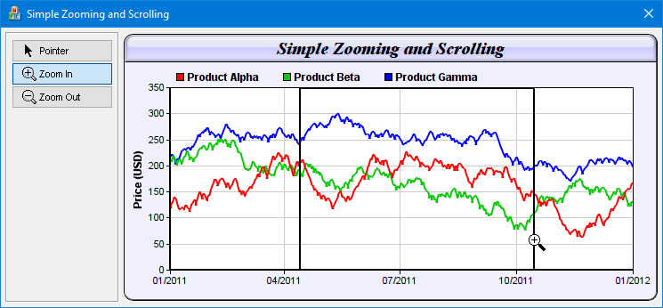

This sample program demonstrates simple zoomable and scrollable chart with tooltips, using mouse click and drag to control zooming and scrolling.
The main source code listing of this sample program is included at the end of this section. The code consists of the following main parts:
[MFC version] mfcdemo/SimpleZoomScrollDlg.cpp
// SimpleZoomScrollDlg.cpp : implementation file
//
#include "stdafx.h"
#include "resource.h"
#include "SimpleZoomScrollDlg.h"
#include "chartdir.h"
#include <math.h>
#ifdef _DEBUG
#define new DEBUG_NEW
#endif
//
// Constructor
//
CSimpleZoomScrollDlg::CSimpleZoomScrollDlg(CWnd* pParent /*=NULL*/)
: CDialog(IDD_SIMPLEZOOMSCROLL, pParent)
{
m_extBgColor = 0xffffff;
m_ranSeries = 0;
}
//
// Destructor
//
CSimpleZoomScrollDlg::~CSimpleZoomScrollDlg()
{
delete m_ranSeries;
delete m_ChartViewer.getChart();
}
void CSimpleZoomScrollDlg::DoDataExchange(CDataExchange* pDX)
{
CDialog::DoDataExchange(pDX);
DDX_Control(pDX, IDC_PointerPB, m_PointerPB);
DDX_Control(pDX, IDC_ChartViewer, m_ChartViewer);
}
BEGIN_MESSAGE_MAP(CSimpleZoomScrollDlg, CDialog)
ON_BN_CLICKED(IDC_PointerPB, OnPointerPB)
ON_BN_CLICKED(IDC_ZoomInPB, OnZoomInPB)
ON_BN_CLICKED(IDC_ZoomOutPB, OnZoomOutPB)
ON_CONTROL(CVN_ViewPortChanged, IDC_ChartViewer, OnViewPortChanged)
END_MESSAGE_MAP()
//
// Initialization
//
BOOL CSimpleZoomScrollDlg::OnInitDialog()
{
CDialog::OnInitDialog();
// Load icons to mouse usage buttons
loadButtonIcon(IDC_PointerPB, IDI_PointerPB, 100, 20);
loadButtonIcon(IDC_ZoomInPB, IDI_ZoomInPB, 100, 20);
loadButtonIcon(IDC_ZoomOutPB, IDI_ZoomOutPB, 100, 20);
//
// Initialize member variables
//
m_extBgColor = getDefaultBgColor(); // Default background color
// Load the data
loadData();
// Initialize the CChartViewer
initChartViewer(&m_ChartViewer);
// Trigger the ViewPortChanged event to draw the chart
m_ChartViewer.updateViewPort(true, true);
return TRUE;
}
//
// User clicks on the Pointer pushbutton
//
void CSimpleZoomScrollDlg::OnPointerPB()
{
m_ChartViewer.setMouseUsage(Chart::MouseUsageScroll);
}
//
// User clicks on the Zoom In pushbutton
//
void CSimpleZoomScrollDlg::OnZoomInPB()
{
m_ChartViewer.setMouseUsage(Chart::MouseUsageZoomIn);
}
//
// User clicks on the Zoom Out pushbutton
//
void CSimpleZoomScrollDlg::OnZoomOutPB()
{
m_ChartViewer.setMouseUsage(Chart::MouseUsageZoomOut);
}
//
// The ViewPortChanged event handler. This event occurs if the user scrolls or zooms in or
// out the chart by dragging or clicking on the chart. It can also be triggered by calling
// CChartViewer.updateViewPort.
//
void CSimpleZoomScrollDlg::OnViewPortChanged()
{
if (m_ChartViewer.needUpdateChart())
drawChart(&m_ChartViewer);
if (m_ChartViewer.needUpdateImageMap())
updateImageMap(&m_ChartViewer);
}
//
// Load the data
//
void CSimpleZoomScrollDlg::loadData()
{
// In this example, we just use random numbers as data.
m_ranSeries = new RanSeries(127);
m_timeStamps = m_ranSeries->getDateSeries(1827, Chart::chartTime(2007, 1, 1), 86400);
m_dataSeriesA = m_ranSeries->getSeries(1827, 150, -10, 10);
m_dataSeriesB = m_ranSeries->getSeries(1827, 200, -10, 10);
m_dataSeriesC = m_ranSeries->getSeries(1827, 250, -8, 8);
}
//
// Initialize the CChartViewer
//
void CSimpleZoomScrollDlg::initChartViewer(CChartViewer *viewer)
{
// Set the full x range to be the duration of the data
viewer->setFullRange("x", m_timeStamps[0], m_timeStamps[m_timeStamps.len - 1]);
// Initialize the view port to show the latest 20% of the time range
viewer->setViewPortWidth(0.2);
viewer->setViewPortLeft(1 - viewer->getViewPortWidth());
// Set the maximum zoom to 10 points
viewer->setZoomInWidthLimit(10.0 / m_timeStamps.len);
// Enable mouse wheel zooming by setting the zoom ratio to 1.1 per wheel event
viewer->setMouseWheelZoomRatio(1.1);
// Initially set the mouse to drag to scroll mode.
m_PointerPB.SetCheck(1);
viewer->setMouseUsage(Chart::MouseUsageScroll);
}
//
// Draw the chart and display it in the given viewer
//
void CSimpleZoomScrollDlg::drawChart(CChartViewer *viewer)
{
// Get the start date and end date that are visible on the chart.
double viewPortStartDate = viewer->getValueAtViewPort("x", viewer->getViewPortLeft());
double viewPortEndDate = viewer->getValueAtViewPort("x", viewer->getViewPortLeft() +
viewer->getViewPortWidth());
// Get the array indexes that corresponds to the visible start and end dates
int startIndex = (int)floor(Chart::bSearch(m_timeStamps, viewPortStartDate));
int endIndex = (int)ceil(Chart::bSearch(m_timeStamps, viewPortEndDate));
int noOfPoints = endIndex - startIndex + 1;
// Extract the part of the data array that are visible.
DoubleArray viewPortTimeStamps = DoubleArray(m_timeStamps.data + startIndex, noOfPoints);
DoubleArray viewPortDataSeriesA = DoubleArray(m_dataSeriesA.data + startIndex, noOfPoints);
DoubleArray viewPortDataSeriesB = DoubleArray(m_dataSeriesB.data + startIndex, noOfPoints);
DoubleArray viewPortDataSeriesC = DoubleArray(m_dataSeriesC.data + startIndex, noOfPoints);
//
// At this stage, we have extracted the visible data. We can use those data to plot the chart.
//
///////////////////////////////////////////////////////////////////////////////////////
// Configure overall chart appearance.
///////////////////////////////////////////////////////////////////////////////////////
// Create an XYChart object 600 x 300 pixels in size, with pale blue (0xf0f0ff) background,
// black (000000) rounded border, 1 pixel raised effect.
XYChart *c = new XYChart(600, 300, 0xf0f0ff, 0, 1);
c->setRoundedFrame(m_extBgColor);
// Set the plotarea at (52, 60) and of size 520 x 205 pixels. Use white (ffffff) background.
// Enable both horizontal and vertical grids by setting their colors to grey (cccccc). Set
// clipping mode to clip the data lines to the plot area.
c->setPlotArea(52, 60, 520, 205, 0xffffff, -1, -1, 0xcccccc, 0xcccccc);
// As the data can lie outside the plotarea in a zoomed chart, we need to enable clipping.
c->setClipping();
// Add a top title to the chart using 15 pts Times New Roman Bold Italic font, with a light blue
// (ccccff) background, black (000000) border, and a glass like raised effect.
c->addTitle("Simple Zooming and Scrolling", "Times New Roman Bold Italic", 15
)->setBackground(0xccccff, 0x0, Chart::glassEffect());
// Add a legend box at the top of the plot area with 9pts Arial Bold font with flow layout.
c->addLegend(50, 33, false, "Arial Bold", 9)->setBackground(Chart::Transparent, Chart::Transparent);
// Set axes width to 2 pixels
c->yAxis()->setWidth(2);
c->xAxis()->setWidth(2);
// Add a title to the y-axis
c->yAxis()->setTitle("Price (USD)", "Arial Bold", 9);
///////////////////////////////////////////////////////////////////////////////////////
// Add data to chart
///////////////////////////////////////////////////////////////////////////////////////
//
// In this example, we represent the data by lines. You may modify the code below to use other
// representations (areas, scatter plot, etc).
//
// Add a line layer for the lines, using a line width of 2 pixels
LineLayer *layer = c->addLineLayer();
layer->setLineWidth(2);
// In this demo, we do not have too many data points. In real code, the chart may contain a lot
// of data points when fully zoomed out - much more than the number of horizontal pixels in this
// plot area. So it is a good idea to use fast line mode.
layer->setFastLineMode();
// Now we add the 3 data series to a line layer, using the color red (ff0000), green
// (00cc00) and blue (0000ff)
layer->setXData(viewPortTimeStamps);
layer->addDataSet(viewPortDataSeriesA, 0xff0000, "Product Alpha");
layer->addDataSet(viewPortDataSeriesB, 0x00cc00, "Product Beta");
layer->addDataSet(viewPortDataSeriesC, 0x0000ff, "Product Gamma");
///////////////////////////////////////////////////////////////////////////////////////
// Configure axis scale and labelling
///////////////////////////////////////////////////////////////////////////////////////
// Set the x-axis as a date/time axis with the scale according to the view port x range.
viewer->syncDateAxisWithViewPort("x", c->xAxis());
// In this demo, we rely on ChartDirector to auto-label the axis. We ask ChartDirector to ensure
// the x-axis labels are at least 75 pixels apart to avoid too many labels.
c->xAxis()->setTickDensity(75);
///////////////////////////////////////////////////////////////////////////////////////
// Output the chart
///////////////////////////////////////////////////////////////////////////////////////
delete viewer->getChart();
viewer->setChart(c);
}
//
// Update the image map
//
void CSimpleZoomScrollDlg::updateImageMap(CChartViewer *viewer)
{
// Include tool tip for the chart
if (0 == viewer->getImageMapHandler())
{
viewer->setImageMap(viewer->getChart()->getHTMLImageMap("", "",
"title='[{dataSetName}] {x|mmm dd, yyyy}: USD {value|2}'"));
}
}
/////////////////////////////////////////////////////////////////////////////
// General utilities
//
// Get the default background color
//
int CSimpleZoomScrollDlg::getDefaultBgColor()
{
LOGBRUSH LogBrush;
HBRUSH hBrush = (HBRUSH)SendMessage(WM_CTLCOLORDLG, (WPARAM)CClientDC(this).m_hDC,
(LPARAM)m_hWnd);
::GetObject(hBrush, sizeof(LOGBRUSH), &LogBrush);
int ret = LogBrush.lbColor;
return ((ret & 0xff) << 16) | (ret & 0xff00) | ((ret & 0xff0000) >> 16);
}
//
// Load an icon resource into a button
//
void CSimpleZoomScrollDlg::loadButtonIcon(int buttonId, int iconId, int width, int height)
{
// Resize the icon to match the screen DPI for high DPI support
HDC screen = ::GetDC(0);
double scaleFactor = GetDeviceCaps(screen, LOGPIXELSX) / 96.0;
::ReleaseDC(0, screen);
width = (int)(width * scaleFactor + 0.5);
height = (int)(height * scaleFactor + 0.5);
GetDlgItem(buttonId)->SendMessage(BM_SETIMAGE, IMAGE_ICON, (LPARAM)::LoadImage(
AfxGetResourceHandle(), MAKEINTRESOURCE(iconId), IMAGE_ICON, width, height,
LR_DEFAULTCOLOR));
}
© 2023 Advanced Software Engineering Limited. All rights reserved.